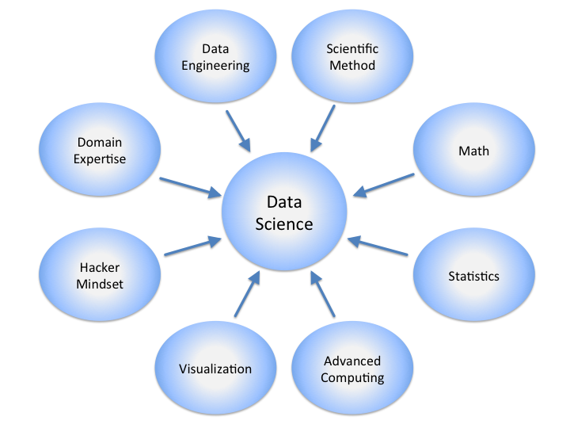

Liwei Wu...
always curious about the world around me
Leetcode Summary
to write down ideas and summarize techniques when practicing leetcode questions
Leetcode 291. Word Pattern II
Posted on Oct 05, 2017
This question is much harder than 290. Word Pattern despite the only difference it removes the space between words. What makes it hard is that now we don't know where does one word, where does one end. In this kind of scenario, one should use backtracking. I used set for the same reason as previous question. The beginning of helper function is what I called "ending conditions" and recursion logic is buried in the foor loop (there are two separate cases for each potential word: either in hashtable or not). One should deal with those two cases separately.
class Solution {
public:
bool wordPatternMatch(string pattern, string str) {
unordered_map<char, string> m;
set<string> s;
return helper(pattern, 0, str, 0, m, s);
}
bool helper(string& pattern, int p1, string& str, int p2, unordered_map<char, string>& m, set<string>& s) {
if (p1 == pattern.size() && p2 == str.size()) {
return true;
}
if (p1 == pattern.size() || p2 == str.size()) {
return false;
}
char c = pattern[p1];
for (int i = p2; i < str.size(); ++i) {
string word = str.substr(p2, i - p2 + 1);
if (m.find(c) != m.end()) {
if (m[c] == word) {
return helper(pattern, p1 + 1, str, i + 1, m, s);
}
} else {
if (s.find(word) != s.end()) {
continue;
}
m[c] = word;
s.insert(word);
if (helper(pattern, p1 + 1, str, i + 1, m, s)) {
return true;
}
m.erase(c);
s.erase(word);
}
}
return false;
}
};
Leetcode 290. Word Pattern
Posted on Oct 05, 2017
Just realized there is no need to use two unordered_map. Can simply use one. Well, it is a trade-off between space and time.
class Solution {
public:
bool wordPattern(string pattern, string str) {
unordered_map<char, string> m;
istringstream in(str);
int i = 0;
for (string word; in >> word; ++i) {
char c = pattern[i];
if (m.find(c) != m.end()) {
if (m[c] != word)
return false;
} else {
for (auto it = m.begin(); it != m.end(); ++it) {
if (it->second == word)
return false;
}
m[c] = word;
}
}
return i == pattern.size();
}
};
class Solution {
public:
bool wordPattern(string pattern, string str) {
unordered_map<char, string> m;
// use set to avoid traversing the m, but uses more space
set<string> s;
istringstream in(str);
int i = 0;
for (string word; in >> word; ++i) {
char c = pattern[i];
if (m.find(c) != m.end()) {
if (m[c] != word)
return false;
} else {
/*for (auto it = m.begin(); it != m.end(); ++it) {
if (it->second == word)
return false;
}*/
if (s.count(word)) {
return false;
}
m[c] = word;
s.insert(word);
}
}
return i == pattern.size();
}
};
Leetcode 362. Design Hit Counter
Posted on Oct 05, 2017
I think the main difficult lies in the follow-up questions: What if the number of hits per second could be very large? Does your design scale?
I think in a real interview, that is the kind of questions you should bring it up to the interview before you are asked. It is quite likely that there are thousands if not millions of hits each second. One may wish to use long or long long instead of int below to avoid overflow issues. since $2^32 - 1 = 4,294,967,295$, it is not that a large number. Overflow could happen when we don't have 300 seconds but a lot more granularities. maybe 300 * 60 ms. Also try not use 300 directly in the codes, define a constant number instead. The algorithm side, using a bucket of 300 is quick smart, definitely smarter than using a queue and returning the size of queue as the result. Since the size of queue could be very large and that is simply a waste of memory when you don't need to store the exact timestamp (same here) many many times. It could easily lead to memory issues when scaling up. Therefore, one should never do that in practice. Instead the requirement says that you need to keep the history, then you should write it to a database/disk for every second query results. I think more likely case is that not only hits are useful but also the hit comes with other useful information and those information usually is written to database. One may wish to access those later. (a need to record the hits id within past 300 seconds). One just need to add a vector<vector<int>> to store those.
class HitCounter {
public:
/** Initialize your data structure here. */
HitCounter() {
times.resize(300, 0);
hits.resize(300, 0);
}
/** Record a hit.
@param timestamp - The current timestamp (in seconds granularity). */
void hit(int timestamp) {
int idx = timestamp % 300;
if (times[idx] == timestamp) {
hits[idx]++;
} else {
times[idx] = timestamp;
hits[idx] = 1;
}
return;
}
/** Return the number of hits in the past 5 minutes.
@param timestamp - The current timestamp (in seconds granularity). */
int getHits(int timestamp) {
int res = 0;
for (int i = 0; i < NUM_BUCKETS; ++i) {
// the line below is not needed of there are hits every second
if (timestamp - times[i] < 300) {
res += hits[i];
}
}
return res;
}
private:
int NUM_BUCKETS = 300;
// record timestamp for past 300 seconds
vector<int> times;
// record how many hits for past 300 seconds
vector<int> hits;
};
/**
* Your HitCounter object will be instantiated and called as such:
* HitCounter obj = new HitCounter();
* obj.hit(timestamp);
* int param_2 = obj.getHits(timestamp);
*/
Leetcode 609. Find Duplicate File in System
Posted on Oct 05, 2017
Use of Hashmap. I feel whenever one is dealing with string, it is much easier to do so using Python. Here, we don't have to use dfs or bfs, since the paths have been given. Those follow up questions are quite interesting:
- 1. Imagine you are given a real file system, how will you search files? DFS or BFS?
- 2. If the file content is very large (GB level), how will you modify your solution?
- 3. If you can only read the file by 1kb each time, how will you modify your solution?
- 4. What is the time complexity of your modified solution? What is the most time-consuming part and memory consuming part of it? How to optimize?
- 5. How to make sure the duplicated files you find are not false positive?
- 1. In real life, one may want to use dfs over bfs when the search is deep, since bfs uses much more memory than dfs. BFS may have better cache performance, due to locality of files on disk. But if you know the files you are searching for is close to the node you are currently at, then BFS may be performing better.
- 2. It is not possible to hash the entire contents as what the codes did below. Instead, one should first map files accoring to file size, for the files of same size, hash a small part of file using MD5 for example. Only when all those are the same, we will compare byte by byte.
- 3. We can still hash 1k chunk similarly.
- 4. Worst time complexity is $O(n^2 * k)$, when all files have the same size k bytes, and we have to compare every two files byte by byte.
- 5. file size, hash, byte by byte as last sanity check.
class Solution {
public:
vector<vector<string>> findDuplicate(vector<string>& paths) {
unordered_map<string, vector<string>> files;
vector<vector<string>> res;
for (auto path : paths) {
stringstream ss(path);
string root;
string s;
getline(ss, root, ' ');
while (getline(ss, s, ' ')) {
string filename = root + '/' + s.substr(0, s.find('('));
string filecontent = s.substr(s.find('(') + 1, s.find(')') - s.find('(') - 1);
files[filecontent].push_back(filename);
}
}
for (auto it = files.begin(); it != files.end(); ++it) {
if ((it->second).size() > 1) {
res.push_back(it->second);
}
}
return res;
}
};
Leetcode 549. Binary Tree Longest Consecutive Sequence II
Posted on Sep 18, 2017
Recursion for Binary Tree.
class Solution {
public:
int longestConsecutive(TreeNode* root) {
if (!root) {
return 0;
}
int res = 0;
res = helper(root, 1) + helper(root, -1) + 1;
return max(res, max(longestConsecutive(root->left), longestConsecutive(root->right)));
}
private:
int helper(TreeNode* root, int diff) {
if (!root) {
return 0;
}
int left = 0, right = 0;
if (root->left && root->left->val == root->val + diff) {
left = 1 + helper(root->left, diff);
}
if (root->right && root->right->val == root->val + diff) {
right = 1 + helper(root->right, diff);
}
return max(left, right);
}
};
Leetcode 298. Binary Tree Longest Consecutive Sequence
Posted on Sep 18, 2017
Recursion for Binary Tree.
/**
* Definition for a binary tree node.
* struct TreeNode {
* int val;
* TreeNode *left;
* TreeNode *right;
* TreeNode(int x) : val(x), left(NULL), right(NULL) {}
* };
*/
class Solution {
public:
int longestConsecutive(TreeNode* root) {
if (!root) return 0;
int res = 0;
dfs(root, 1, res);
return res;
}
private:
void dfs(TreeNode* root, int len, int& res) {
res = max(res, len);
if (root->left) {
if (root->left->val == root->val + 1) {
dfs(root->left, len + 1, res);
} else {
dfs(root->left, 1, res);
}
}
if (root->right) {
if (root->right->val == root->val + 1) {
dfs(root->right, len + 1, res);
} else {
dfs(root->right, 1, res);
}
}
}
};
class Solution {
public:
int longestConsecutive(TreeNode* root) {
return helper(root, nullptr, 0);
}
private:
int helper(TreeNode* root, TreeNode* p, int res) {
if (!root) return res;
res = (p && root->val == p->val + 1) ? res + 1 : 1;
return max(res, max(helper(root->left, root, res), helper(root->right, root, res)));
}
};
Leetcode 296. Best Meeting Point
Posted on Sep 18, 2017
Consider one dimension first. Then one will realize the median of an odd sequence or any value following in between middle two values of an even sequence are the results. Similarly, for higher dimensions, we can consider each dimension one by one.
class Solution {
public:
int minTotalDistance(vector<vector<int>>& grid) {
vector<int> rows, cols;
for (int i = 0; i < grid.size(); ++i) {
for (int j = 0; j < grid[0].size(); ++j) {
if (grid[i][j] == 1) {
rows.push_back(i);
cols.push_back(j);
}
}
}
return minTotalDistance(rows) + minTotalDistance(cols);
}
private:
int minTotalDistance(vector<int>& v) {
sort(v.begin(), v.end());
int res = 0, i = 0, j = v.size() - 1;
while (i < j) {
res += (v[j--] - v[i++]);
}
return res;
}
};
Leetcode 317. Shortest Distance from All Buildings
Posted on Sep 18, 2017
BFS using queue. We need to do BFS every time we have a building to create a distance matrix for that building. Then we have a cumulative matrix of distances for all buildings. We just need to find the minimum number in that cumulative matrix. Also, need visited bool matrix to avoid adding same node twice in the queue and a cnt matrix to count how many buildings can be reached.
class Solution {
public:
int shortestDistance(vector<vector<int>>& grid) {
int buildingCnt = 0, m = grid.size(), n = grid[0].size();
vector<vector<int>> dist(m, vector<int>(n, 0)), cnt = dist;
vector<vector<int>> dirs{{0, -1}, {0, 1}, {-1, 0}, {1, 0}};
for (int i = 0; i < m; ++i) {
for (int j = 0; j < n; ++j) {
if (grid[i][j] == 1) {
++buildingCnt;
queue<pair<int, int>> q;
q.push({i, j});
int level = 1;
vector<vector<bool>> visited(m, vector<bool>(n, false));
while (!q.empty()) {
int size = q.size();
for (int s = 0; s < size; ++s) {
int a = q.front().first, b = q.front().second;
q.pop();
for (auto dir : dirs){
int x = a + dir[0], y = b + dir[1];
if (x >= 0 && x < m && y >= 0 && y < n
&& grid[x][y] == 0 && visited[x][y] == false) {
visited[x][y] = true;
dist[x][y] += level;
cnt[x][y] += 1;
q.push({x, y});
}
}
}
++level;
}
}
}
}
int res = INT_MAX;
for (int i = 0; i < m; ++i) {
for (int j = 0; j < n; ++j) {
if (grid[i][j] == 0 && cnt[i][j] == buildingCnt) {
res = min(res, dist[i][j]);
}
}
}
return (res == INT_MAX) ? -1 : res;
}
};
Leetcode 542. 01 Matrix
Posted on Sep 17, 2017
BFS using queue. Starting from any 0 point. The reason that we do not need additional visisted boolean matrix here is that we have the condition that matrix[x][y] > matrix[t.first][t.second] to prevent one node being added twice.
class Solution {
public:
vector<vector<int>> updateMatrix(vector<vector<int>>& matrix) {
int m = matrix.size(), n = matrix[0].size();
vector<vector<int>> dirs{{1, 0}, {-1, 0}, {0, 1}, {0, -1}};
queue<pair<int, int>> q;
for (int i = 0; i < m; ++i) {
for (int j = 0; j < n; ++j) {
if (matrix[i][j] == 0) {
q.push({i, j});
} else {
matrix[i][j] = INT_MAX;
}
}
}
while (q.empty() == false) {
auto t = q.front();
q.pop();
for (auto dir : dirs) {
int x = t.first + dir[0], y = t.second + dir[1];
if (x >= 0 && x < m && y >= 0 && y < n) {
if (matrix[x][y] > matrix[t.first][t.second]) {
matrix[x][y] = matrix[t.first][t.second] + 1;
q.push({x, y});
}
}
}
}
return matrix;
}
};
Leetcode 479. Largest Palindrome Product
Posted on Sep 17, 2017
makePalindrome() function to create a palindrome number in a traditional way without using string. Moreover, it supports to create palindrome of odd length and of even length. With left part of palindrome number (including middle digit for odd length) equals to seed $x$. In pratice, what I found is that it always returns in the first for loop in largestPalindrome(), not sure why....maybe the existence can be proved. Also, for even $n$, we can further find the trick of generating the palindrome number by performing when $n = 2$, $(10^2+1)*(10^2-1)-(10^1*(10^2-1)) = 9009$ and when $n = 6$, get $(10^6+1)*(10^6-1)-(10^3*(10^6-1)) = 999000000999$， instead of largest candidate $9999$ and $999999999999$. So for even number, we can get the results easily. Also, here $n$ cannot be too large, otherwise, there will be overflow issues for long (32 bits).
class Solution {
public:
long makePalindrome(int x, bool odd) {
long p = x;
if (odd)
x /= 10;
while (x > 0) {
p = p * 10 + x % 10;
x /= 10;
}
return p;
}
bool isProductOfNumsInRange(long x, int min, int max)
{
int d_max = x / min;
if (d_max > max)
d_max = max;
for (long d = d_max; d * d >= x; d--)
if (x % d == 0) {
cout << d << " " << x / d << endl;
return true;
}
return false;
}
int largestPalindrome(int n) {
int max = pow(10, n) - 1;
int min = pow(10, n - 1);
for (int x = max; x > 0; x--) {
long p = makePalindrome(x, false);
if (isProductOfNumsInRange(p, min, max)) {
cout << p;
return p % 1337;
}
}
for (int x = max; x > 0; x--) {
long p = makePalindrome(x, true);
if (isProductOfNumsInRange(p, min, max))
return p % 1337;
}
return 0;
}
};
Leetcode 393. UTF-8 Validation
Posted on Sep 17, 2017
First, keep in mind that 0b used to represent binary literal and 0x for hexadecimal, 0 for octal. See here. To know more about utf-8 and relationship with ASCII and extended-ASCII, read wikipedia.
class Solution {
public:
bool validUtf8(vector<int>& data) {
int cnt = 0;
for (int d : data) {
if (cnt == 0) {
if ((d >> 5) == 0b110) {
cnt = 1;
} else if ((d >> 4) == 0b1110) {
cnt = 2;
} else if ((d >> 3) == 0b11110) {
cnt = 3;
} else if ((d >> 7) == 0b0) {
cnt = 0;
} else {
return false;
}
} else {
if ((d >> 6) == 0b10) {
--cnt;
} else {
return false;
}
}
}
return cnt == 0;
}
};
Leetcode 657. Judge Route Circle
Posted on Sep 17, 2017
It seems the question already assumes each character has to be one of 'R', 'L', 'U', 'D' and using unordered_map is slowerer than using 4 variables due to the overhead. One can simply use 4 variables each corresponding to one of the moves and check the same criteria. Well, in that case, one can even use two variables just representing the difference of each pair of moves. One variable does not work all the time, since decoding $R = 2, L = -2, U = 3, D = -3$, then $3 * R + 2 * D = 0$, although they should not be so. It only works if lowest common multiple: $x * R = y * U$ and $x > n, y > n$, where n is the length of string. Only satisfying this criteria, one can use one global variable.
class Solution {
public:
bool judgeCircle(string moves) {
unordered_map<char, int> m ({
{'R', 0}, {'L', 0}, {'U', 0}, {'D', 0}
});
for (int i = 0; i < moves.size(); ++i) {
char c = moves[i];
if (m.find(c) == m.end()) {
return false;
} else {
m[c] += 1;
}
}
if (m['R'] == m['L'] && m['U'] == m['D']) {
return true;
} else {
return false;
}
}
};
Leetcode 535. Encode and Decode TinyURL
Posted on Sep 10, 2017
Basically we want to use $62^6 = 56,800,235,584$ to represent all the URLs for all the websites (1.6 billion as of 2016 so 6 digits are sufficient). To achieve this, first idea is to design a hashing function. One can use the codes below to avoid conflicts but it will be slow eventually, because towards the end, it will be harder and harder to find approporiate shorturl. Similar idea, one can use md5/sha1 which takes "longurl + timestamp" as key and regenerate hash codes when there are conflicts. Of course, when data gets very large and exceed memory size of one machine, one should use distributed SQL or NoSQL database to store key-value pair. (also depending on the peak QPS: Queries Per Second).
See here for more details on the use of rand(), and srand() to generate pseudo-random number.
class Solution {
public:
Solution() {
dict = "0123456789abcdefghijklmnopqrstuvwxyzABCDEFGHIJKLMNOPQRSTUVWXYZ";
short2long.clear();
long2short.clear();
srand(time(nullptr));
}
// Encodes a URL to a shortened URL.
string encode(string longUrl) {
if (long2short.find(longUrl) != long2short.end()) {
return "http://tinyurl.com/" + long2short[longUrl];
}
int idx;
string randStr;
for (int i = 0; i < 6; ++i) {
randStr.push_back(dict[rand() % 62]);
}
while (short2long.find(randStr) != short2long.end()) {
randStr[idx] = dict[rand() % 62];
idx = (idx + 1) % 5;
}
short2long[randStr] = longUrl;
long2short[longUrl] = randStr;
return "http://tinyurl.com/" + randStr;
}
// Decodes a shortened URL to its original URL.
string decode(string shortUrl) {
string randStr = shortUrl.substr(shortUrl.rfind("/") + 1);
return short2long.find(randStr) == short2long.end() ? shortUrl : short2long[randStr];
}
private:
string dict;
unordered_map<string, string> short2long, long2short;
};
Leetcode 534. Design TinyURL
The second way is to create a one-to-one mapping between base10 and base62. One can simply use base10/base62 as primary keys and longURL as values in SQL databases. We can increment the counter by 1 when a new link is added. When we want to add links distributedly, we can assign counter quota in advance to each machine (creating mapping in advance but leave value field empty) and then fill them out. For more details on System Design, see this post. In this kind of question, one should first be clear about the purpose (e.g. indexing pages in advance or on the fly) by asking. Then one should figure out how many users, work load, QPS, read-write speed (read heavy or write heavy), and figure out which database to use (SQL vs NoSQL, row vs column, single machine vs distributed DB). And design system algorithms (e.g. here is URLService class, including encode and decode API). One can further optimize using DB sharding (not only horizontal partitioning but also data replication) and cache server.
public class URLService {
HashMap<String, Integer> ltos;
HashMap<Integer, String> stol;
static int COUNTER;
String elements;
URLService() {
ltos = new HashMap<String, Integer>();
stol = new HashMap<Integer, String>();
COUNTER = 1;
elements = "0123456789abcdefghijklmnopqrstuvwxyzABCDEFGHIJKLMNOPQRSTUVWXYZ";
}
public String longToShort(String url) {
String shorturl = base10ToBase62(COUNTER);
ltos.put(url, COUNTER);
stol.put(COUNTER, url);
COUNTER++;
return "http://tiny.url/" + shorturl;
}
public String shortToLong(String url) {
url = url.substring("http://tiny.url/".length());
int n = base62ToBase10(url);
return stol.get(n);
}
public int base62ToBase10(String s) {
int n = 0;
for (int i = 0; i < s.length(); i++) {
n = n * 62 + convert(s.charAt(i));
}
return n;
}
public int convert(char c) {
if (c >= '0' && c <= '9')
return c - '0';
if (c >= 'a' && c <= 'z') {
return c - 'a' + 10;
}
if (c >= 'A' && c <= 'Z') {
return c - 'A' + 36;
}
return -1;
}
public String base10ToBase62(int n) {
StringBuilder sb = new StringBuilder();
while (n != 0) {
sb.insert(0, elements.charAt(n % 62));
n /= 62;
}
while (sb.length() != 6) {
sb.insert(0, '0');
}
return sb.toString();
}
}
Leetcode 23. Merge k Sorted Lists
Posted on Sep 8, 2017
Pay attention to the syntax that lambda expression cannot be used inside priority_queue template and one should use functor. This is different from sort. For sorting, there are a few different ways of changing default comparator, either by overloading operators or using lambda expression/functor to create custom operator (in C++, default is std:less, and default is max heap for priority queue, sorting order is increasing by fault). One can use functor for sort too but one should use cmp() instead of cmp.
Advantage of C++ over Python in interview is that one can easily use min-heap by
priority_queue<int, vector<int>, greater<int>> Q; For the question itself, there are two ways of solving this question. One is divide and conquer: merge 2 lists at one time, and do it from bottom-up approach. The other is use extra space to store first node for each linked-list. Both approaches have the same time complexity: $O(n \ k \ log(k))$, where $n$ is average number of nodes in a list and $k$ is number of lists.
Also pay attention to the difference of heap and priority_queue: see here. The one usually referred is called Binary Heap but there are many more variants of heaps and see this notes for time complexity comparisons link.
/**
* Definition for singly-linked list.
* struct ListNode {
* int val;
* ListNode *next;
* ListNode(int x) : val(x), next(NULL) {}
* };
*/
// Divide and Conquer
class Solution {
public:
ListNode* mergeKLists(vector<ListNode*>& lists) {
if (lists.size() == 0) return NULL;
int n = lists.size();
while (n > 1) {
int k = (n + 1) / 2;
for (int i = 0; i < n / 2; ++i) {
lists[i] = mergeTwoLists(lists[i], lists[i + k]);
}
n = k;
}
return lists[0];
}
ListNode* mergeTwoLists(ListNode* l1, ListNode* l2) {
ListNode* head = new ListNode(-1);
ListNode* cur = head;
while (l1 && l2) {
if (l1->val < l2->val) {
cur->next = l1;
l1 = l1->next;
} else {
cur->next = l2;
l2 = l2->next;
}
cur = cur->next;
}
if (l1) cur->next = l1;
if (l2) cur->next = l2;
return head->next;
}
};
// priority queue
struct cmp {
bool operator () (ListNode* a, ListNode* b) {
return a->val > b->val;
}
};
struct great {
bool operator () (int a, int b) {
return a > b;
}
};
class Solution {
public:
ListNode* mergeKLists(vector<ListNode*>& lists) {
// first 10 lines are not related to question itself....
vector m{2, 5, 2, 3, 4};
/*struct great {
bool operator () (int a, int b) {
return a > b;
}
}great;
sort(m.begin(), m.end(), great);*/
sort(m.begin(), m.end(), great());
for (int i = 0; i < m.size(); ++i) {
cout << m[i] << " ";
}
priority_queue<ListNode*, vector<ListNode*>, cmp> pq;
for (int i = 0; i < lists.size(); ++i) {
if (lists[i]) {
pq.push(lists[i]);
}
}
ListNode* head = nullptr;
ListNode* pre = nullptr;
while (!pq.empty()) {
ListNode* tmp = pq.top();
pq.pop();
if (!head) {
head = tmp;
}
else {
pre->next = tmp;
}
pre = tmp;
if (tmp->next) {
pq.push(tmp->next);
}
}
return head;
}
};
Leetcode 81. Search in Rotated Sorted Array II
Posted on Sep 8, 2017
The main difference this question and previous question is that this may contain duplicates. Therefore, one should consider cases when duplicate affect the decision whether left or right subsequence is increasing. Consider $[3, 1, 1]$ and $[1, 1, 3, 1]$, one can see that it is impossible to tell when $nums[mid] = nums[right]$, but we do know that nums[right] is not the target we want, therefore, we can simply by removing the right-most element and trim into a smaller subsequence which has a deterministic relationship between nums[mid] and nums[right] without affecting the final answer. If every element is exactly the same, then we have $O(n)$ time complexity instead of $O(log(n))$ and this is the best we can do.
class Solution {
public:
bool search(vector<int> nums, int target) {
int n = nums.size();
if (n == 0) return false;
int left = 0, right = n - 1;
while (left <= right) {
int mid = left + (right - left) / 2;
if (nums[mid] == target) {
return true;
}
// consider [3, 1, 1] and [1, 1, 3, 1]
if (nums[mid] == nums[right]) {
--right;
} else if (nums[mid] > nums[right]) {
// [4, 5, 6, 7, -1, 0, 1, 2]
// left side is increasing
if (nums[left] <= target && target < nums[mid]) {
right = mid - 1;
} else {
left = mid + 1;
}
} else {
// [4, 5, 6, -2, -1, 0, 1, 2]
// right side is increasing
if (nums[mid] < target && target <= nums[right]) {
left = mid + 1;
} else {
right = mid - 1;
}
}
}
return false;
}
};
Leetcode 33. Search in Rotated Sorted Array
Posted on Sep 8, 2017
if value at mid is less than value at right, then it means the right subsequence is increasing and we want to check if target is in this subsequence or not. If not, we go to left hand side. If value at mid is greater than the value at right, that means we have the left subsequence increasing. We should have different rules of checking if target value falls left or right hand side for those two scenarios.
class Solution {
public:
int search(vector<int>& nums, int target) {
if (nums.empty()) return -1;
if (nums.size() == 1) return (nums[0] == target) ? 0 : -1;
int left = 0, right = nums.size() - 1;
while (left <= right) {
int mid = left + (right - left) / 2;
if (nums[mid] == target) {
return mid;
}
if (nums[mid] < nums[right]) {
if (nums[mid] < target && target <= nums[right]) {
left = mid + 1;
} else {
right = mid - 1;
}
} else {
if (nums[left] <= target && target < nums[mid]) {
right = mid - 1;
} else{
left = mid + 1;
}
}
}
return -1;
}
};
Leetcode 294. Flip Game II
Posted on Sep 4, 2017
Pay attention: return true when there is a way to win (can win), and return false, when it must lose. Use private variable to speed-up (memorization).
class Solution {
private:
unordered_map<string, bool> m;
public:
bool canWin(string s) {
if (s.size() <= 1) {
return false;
}
if (m.find(s) != m.end()) {
return m[s];
}
for (int i = 0; i < s.size() - 1; ++i) {
if (s[i] == '+' && s[i + 1] == '+') {
s[i] = s[i + 1] = '-';
if (canWin(s)){
m[s] = true;
} else {
return true;
}
s[i] = s[i + 1] = '+';
}
}
m[s] = false;
return false;
}
};
Leetcode 293. Flip Game
Posted on Sep 4, 2017
Very Straightforward. Use substr or simply change in place.
class Solution {
public:
vector<string> generatePossibleNextMoves(string s) {
vector<string> res;
int n = s.size();
if (n <= 1) return res;
for (int i = 0; i < n - 1; ++i) {
if (s[i] == '+' && s[i + 1] == '+') {
s[i] = '-';
s[i + 1] = '-';
//res.push_back(s.substr(0, i) + "--" + s.substr(i + 2));
res.push_back(s);
s[i] = '+';
s[i + 1] = '+';
}
}
return res;
}
};
Leetcode 482. License Key Formatting
Posted on Sep 4, 2017
Very Straightforward. Even easier in Python.
class Solution {
public:
string licenseKeyFormatting(string S, int K) {
string res = "";
int cnt = 0;
int n = S.size();
for (int i = n - 1; i >= 0; --i) {
char c = toupper(S[i]);
if (c == '-') {
continue;
}
// use following when toupper() is not allowed
//if (c >= 'a' && c <= 'z') c -= 32;
res.push_back(c);
if (++cnt % K == 0) {
res.push_back('-');
}
}
if (!res.empty() && res.back() == '-') {
res.pop_back();
}
return string(res.rbegin(), res.rend());
}
};
Leetcode 577. Employee Bonus
Posted on Sep 4, 2017
To recall the difference between on and where, see link and see here for the difference between inner_join and outer_join (left, right).
SELECT Employee.name as name, Bonus.bonus as bonus
FROM Employee LEFT OUTER JOIN Bonus
ON Employee.empId = Bonus.empId
WHERE bonus < 1000 OR bonus IS NULL;
Leetcode 597. Friend Requests I: Overall Acceptance Rate
Posted on Sep 4, 2017
Use ifnull to deal with null value and use round to round to required digits, use as to change name
SELECT ROUND(IFNULL(
(SELECT COUNT(DISTINCT requester_id, accepter_id) FROM request_accepted) /
(SELECT COUNT(DISTINCT sender_id, send_to_id) FROM friend_request )
,0) ,2) AS accept_rate
Leetcode 670. Maximum Swap
Posted on Sep 4, 2017
Idea is to store the index of last occurence for each digit and then at each step try to switch with a larger digit which has a larger last occurence index. It is greedy algorithm, trying to swtich as left as possible and as large as possible.
class Solution {
public:
int maximumSwap(int num) {
string num_s = to_string(num);
vector<char> num_c;
for (auto it = begin(num_s); it != end(num_s); ++it) {
num_c.push_back(*it);
}
vector<int> pos(10, -1);
for (int i = 0; i < num_c.size(); ++i) {
pos[num_c[i] - '0'] = i;
}
for (int i = 0; i < num_c.size(); ++i) {
for (int j = 9; j > num_c[i] - '0'; --j) {
if (pos[j] > i) {
char tmp = num_c[i];
num_c[i] = j + '0';
num_c[pos[j]] = tmp;
int res = 0;
for (int k = 0; k < num_c.size(); ++k) {
res = res * 10 + (num_c[k] - '0');
}
return res;
}
}
}
return num;
}
};
Leetcode 277. Find the Celebrity
Posted on Sep 4, 2017
Just decided to restart doing the leetcodes starting from facebook/Google tag....
This solution is very brilliant: all the other solutions in terms of number of API calls are $O(n^2)$ but this solution is $O(n)$. Moreover, the space complexity is also $O(1)$. One should image this problem as the following abstraction problems: you are given a matrix of unknown values, which can only be $1$ or $-1$. If $X_{ij} = 1$ means Person $i$ knows Person $j$, $-1$ means otherwise. It costs a lot to flip to find out what the value is. Can you flip least to find the $i$-th diagonal element such that all the elements in that row is $-1$ while all the elements in the column is $1$? (Obviously you don't care what $X_{ii}$ is). Naively, if we go through the matrix one by one, and store everything, we have $O(n^2)$ for both time and space complexity. A slightly smarter way is to use an array to store bool values and eliminate certain rows and columns when doing the check for one potential candidate. (refer to codes in the first solution). But this is still quadratic. The second solution is linear, since the number of API is at most $2n$. One can think of this a shortest path from $(0, 0)$ to $(n, i)$, with $i$ unknown and to be determined. And the constraint of the path is that the horizontal path has to be consisting of all $-1$'s and when having no choice, it has to take diagonal path. This way, the path is contained in the upper diagonal matrix and that is why doing the final check, one shouldn't double check the path that has been checked already. If the final res is $i$, that means all values before $i$ cannot be answer because it was changed to $i$ when it has no choice (knows someone) and all values after $i$ also does not work because $i$ does not know the value after $i$ (so cannot be celebrity).
// Forward declaration of the knows API.
bool knows(int a, int b);
// First Solution, Quadratic API calls
class Solution {
public:
int findCelebrity(int n) {
vector<bool> candidate(n, true);
for (int i = 0; i < n; ++i) {
for (int j = 0; j < n; ++j) {
if (candidate[i] && i != j) {
if (knows(i, j) || !knows(j, i)) {
candidate[i] = false;
break;
} else {
candidate[j] = false;
}
}
}
if (candidate[i]) return i;
}
return -1;
}
};
// Second Solution, Linear (at most 2n) API calls
class Solution {
public:
int findCelebrity(int n) {
int res = 0;
for (int j = 1; j < n; ++j) {
if (knows(res, j)) {
res = j;
}
}
for (int j = 0; j < n; ++j) {
if (j < res) {
if (knows(res, j) || !knows(j, res)) {
return -1;
}
} else if (j > res) {
if (!knows(j, res)) {
return -1;
}
}
}
return res;
}
};
Sorting Algorithms, QuickSort and QuickSelect
Posted on Jun 27, 2017
Notes on QuickSort and QuickSelect.
This paper talks about the cache effects on Multi-Pivot Quicksort. 3-way or 4-way is better than 2-way pivot due to cache performance
See std::nth_element for the built-in function in C++ STL.
For more details in the quickSelect implementation, see the codes below. By the way, quickSort is the same codes, except that we do not need to return $k-th$ element and we can simply sort in-place. Basically, there is no need to pass $k$ in the function parameter.
#include <iostream>
using namespace std;
// A simple print function
void print(int* input) {
for (int i = 0; i < sizeof(input)/sizeof(*input); i++)
cout << input[i] << " ";
cout << endl;
}
int partition(int* input, int p, int r) {
int pivot = input[r];
while ( p < r ) {
while (input[p] <= pivot)
p++;
while (input[r] > pivot)
r--;
// now we have input[p] > pivot && input[r] <= pivot
// we need to swap values at p and r if p < r
if (p < r) {
int tmp = input[p];
input[p] = input[r];
input[r] = tmp;
}
}
return r;
}
int quick_select(int* input, int p, int r, int k) {
if (p == r ) return input[p];
int j = partition(input, p, r);
int length = j - p + 1;
if (length == k) return input[j];
else if (k < length) return quick_select(input, p, j - 1, k);
else return quick_select(input, j + 1, r, k - length);
}
int main() {
int A1[] = { 100, 400, 300, 500, 200 };
cout << "1st order element " << quick_select(A1, 0, 4, 1) << endl;
int A2[] = { 100, 400, 300, 500, 200 };
cout << "2nd order element " << quick_select(A2, 0, 4, 2) << endl;
int A3[] = { 100, 400, 300, 500, 200 };
cout << "3rd order element " << quick_select(A3, 0, 4, 3) << endl;
int A4[] = { 100, 400, 300, 500, 200 };
cout << "4th order element " << quick_select(A4, 0, 4, 4) << endl;
int A5[] = { 100, 400, 300, 500, 200 };
cout << "5th order element " << quick_select(A5, 0, 4, 5) << endl;
}
Leetcode 441. Arranging Coins and Binary Search Summary
Posted on Jun 26, 2017
class Solution(object):
def helper(self, x):
return (1 + x) * x / 2
def arrangeCoins(self, n):
# math solution
# return int((-1 + (1 + 8 * n) ** 0.5) / 2)
left = 1
right = n
while left + 1 < right:
mid = left + (right - left) / 2
tmp = self.helper(mid)
if tmp == n:
return mid
elif tmp > n:
right = mid
else:
left = mid
if self.helper(left) <= n:
return left
else:
return right
As one can see from my node: I am deviating from the two most commone binary search code writing styles. To find the exact match of increasing sequence: one can use one of the two codes below:
def binarySearch(nums, target):
left = 0
right = len(nums)
while left < right:
# good habit, despite python doesn't have overflow issue like c++ and java
mid = left + (right - left) / 2
if nums[mid] == target:
return mid
elif nums[mid] < target:
left = mid + 1
else:
right = mid
return -1
def binarySearch(nums, target):
left = 0
right = len(nums) - 1
while left <= right:
# good habit, despite python doesn't have overflow issue like c++ and java
mid = left + (right - left) / 2
if nums[mid] == target:
return mid
elif nums[mid] < target:
left = mid + 1
else:
right = mid - 1
print(left,right)
return -1
By moving 1 into while loop, one can actually write as below. Then, question comes: what has this exactly achieved?
The answer is that this way, left and right are all in bound of the array. If not putting 1 in the while loop, either left or right will cause the so-called "out of bound" error if one writes nums[left] or nums[right]. If you don't believe, you can check the printed left and right value by running the python codes.
def binarySearch(nums, target):
left = 0
right = len(nums) - 1
while left + 1 < right:
# good habit, despite python doesn't have overflow issue like c++ and java
mid = left + (right - left) / 2
if nums[mid] == target:
return mid
elif nums[mid] < target:
left = mid
else:
right = mid
print(left,right)
return -1
As one may wonder, why is this "in-bound" property useful in practice? It is not particularly useful for finding exact match but it is very very useful for finding lowerbound or upperbound of array. For $[1,6,6,6,8,10]$, I want to find the largest index of element out of those which are smaller than or equal to the target value. To achieve this, I can simply modify my code to be the following:
def binarySearch(nums, target):
left = 0
right = len(nums) - 1
while left + 1 < right:
# good habit, despite python doesn't have overflow issue like c++ and java
mid = left + (right - left) / 2
if nums[mid] >= target:
right = mid
else:
left = mid
print(left,right)
# to find the smallest index among all the equal numbers, like 6 in the example
if nums[right] <= target:
return right
else:
return left
If one wants to find the largest index of element out of all which are smaller than the target, we should tweak the codes a little bit: just need to change last 4 lines of code to be more precise
def binarySearch(nums, target):
left = 0
right = len(nums) - 1
while left + 1 < right:
# good habit, despite python doesn't have overflow issue like c++ and java
mid = left + (right - left) / 2
if nums[mid] >= target:
right = mid
else:
left = mid
print(left,right)
# to find the largest index of element out of all which are smaller than the target,
if nums[right] < target:
return right
else:
return left
Do you feel this way it is much easier to memorize Binary Search Codes?
Similarly, to find the smallest index of element out of those which are larger than or equal to the target value, we should do the following:
def binarySearch(nums, target):
left = 0
right = len(nums) - 1
while left + 1 < right:
# good habit, despite python doesn't have overflow issue like c++ and java
mid = left + (right - left) / 2
if nums[mid] > target:
right = mid
else:
left = mid
print(left,right)
if nums[left] >= target:
return left
else:
return right
Leetcode 416. Partition Equal Subset Sum and Dynamic Search Summary
Posted on Jun 24, 2017
My first idea is to use dfs to search all possible subsets of sum of half of the toal, however, it does not pass the large cases of leetcode. I even tried to sort the input array but still no luck. See my code:
class Solution(object):
def __init__(self):
self.res = False
def dfs(self, total, target, nums, position):
if total == target:
self.res = True
if total > target or position >= len(nums):
return
for i in range(position, len(nums)):
self.dfs(total + nums[i], target, nums, i + 1)
return
def canPartition(self, nums):
if sum(nums) % 2 == 0:
target = sum(nums) / 2
else:
return False
self.dfs(0, target, nums, 0)
return self.res
Then I search solutions online and then realize that this question should be solved using DP (Dynamic Programming). Well, it is not surprising now when you think back, right? Just recall how many times that dp beats recursion in previous questions. But I haven't really coded in python for a long time and haven't done leetcode for a long time too. So it is really a good idea to summarize as I do now. I wish I can keep this habit just like what I did for running. So the dp code is below:
class Solution(object):
def canPartition(self, nums):
if sum(nums) % 2 == 0:
target = sum(nums) / 2
else:
return False
nums.sort()
total = sum(nums)
dp = [False for i in range(target + 1)]
dp[0] = True
for i in range(len(nums)):
for j in reversed(range(nums[i], target + 1)):
dp[j] = dp[j] or dp[j - nums[i]]
return dp[-1]
If you find the code above hard to understand, don't blame yourself. Because it is pretty hard to understand. It is actually a version after space optimization. Time complexity here is $O(n^2)$ and space is $O(n)$. The more straight forward one before optimization will be following and the recurrence equation is
bool canPartition(vector<int>& nums) {
int sum = accumulate(nums.begin(), nums.end(), 0);
if(sum % 2 != 0){
return false;
}
int target = sum / 2;
int n = nums.size();
vector<vector<bool>> dp(n + 1, vector<bool>(target + 1, false));
//now we have to initialize the dp array
for(int i = 1; i <= n; ++i){
dp[i][0] = true;
}
for(int j = 0; j <= target; ++j){
dp[0][j] = false;
}
dp[0][0] = true;
// recurrence equation is dp[i][j] = dp[i-1][j] || dp[i-1][j - nums[i-1]] if j >= nums[i - 1]
// dp[i][j] = dp[i-1][j] otherwise
for(int i = 1; i <= n; ++i){
for(int j = 0; j <= target; ++j){
if(j >= nums[i-1]){
dp[i][j] = dp[i-1][j] || dp[i-1][j - nums[i-1]];
}else{
dp[i][j] = dp[i-1][j];
}
}
}
return dp[n][target];
}
To summarize, the recursion approach is a top-down approach: Start solving the given problem by breaking it down. If you see that the problem has been solved already, then just return the saved answer. If it has not been solved, solve it and save the answer. This is usually easy to think of and very intuitive. This is also referred to as Memoization. While Dynamic Programming approach is a bottom-up approach: Analyze the problem and see the order in which the sub-problems are solved and start solving from the trivial subproblem, up towards the given problem. In this process, it is guaranteed that the subproblems are solved before solving the problem. Read more from the notes by professor at UIUC.
Another similar question to this will be Leetcode 322. Coin Change.
def coinChange(coins, amount):
dp = [0] + [-1] * amount
for x in range(amount):
if dp[x] >= 0:
for c in coins:
if x + c <= amount and (dp[x + c] < 0 or dp[x + c] > dp[x] + 1):
dp[x + c] = dp[x] + 1
return dp[amount]
Leetcode 561. Array Partition I
Posted on Jun 24, 2017
The idea is greedy algorithm: one needs to make the pair difference as small as possible. Don't want to waste the large numbers in the end of array after sorting.
class Solution(object):
def arrayPairSum(self, nums):
nums.sort()
return sum(nums[::2])
Leetcode 617. Merge Two Binary Trees
Posted on Jun 21, 2017
I have the feeling that most questions regarding trees require to use either recursion or stack (queue) to do it iteratively.
And most questions are based on four traversal of trees, namely level order, preorder, postorder, and inorder traversal (Or using similar ideas).
So let us review how we do level order first: the basic idea is that using the queue to store root node first and then each time enqueue its left child node and right child node of the node dequeuing the queue. This way, the nodes in the same level of the tree will always be stored in a block fashion in the queue.
class Solution(object):
def levelOrder(self, root):
if not root: return []
q = collections.deque()
q.append(root)
res = []
while q:
level = []
for i in range(len(q)):
p = q.popleft()
if p.left: q.append(p.left)
if p.right: q.append(p.right)
level.append(p.val)
res.append(level)
return res
To do preorder traversal, using queue does not work, because preoder has to finsh all the left subtree of root before going to the right subtree. So here, only using stack can achieve that.
class Solution(object):
def preorderTraversal(self, root):
if not root:
return []
res = []
stack = [root]
while stack:
p = stack.pop()
res.append(p.val)
if p.right:
stack.append(p.right)
if p.left:
stack.append(p.left)
return res
Or recursively:
class Solution(object):
def preorderTraversal(self, root):
if not root:
return []
left_subtree = self.preorderTraversal(root.left)
right_subtree = self.preorderTraversal(root.right)
return [root.val] + left_subtree + right_subtree
As one can see, when you use stack, one can easily transform into recrusion, which uses call stack while when you need to use queue, such as BFS not DFS then it is much more diffciult, or/and not optimal to transform into recursion. A lot of people have discussed on this: link For level traversal, one can see code: link, which is $O(n^2)$ when the tree is skewed.
To do inorder traversal, similar reasoning compels us to use stack. See code below:
class Solution(object):
def inorderTraversal(self, root):
if not root:
return []
res = []
stack = []
p = root
while stack or p:
while p:
stack.append(p)
p = p.left
node = stack.pop()
p = node.right
res.append(node.val)
return res
One can see that the main difference is the order of pushing nodes onto stack. Instead of the order "parent, right child, left child", one has to push in the order of "root, left child of root, left child of previous one, ...., left-most child in tree, its right-brother (since left-most child's parent already in tree and by this time it has been poped out)"
Postorder is probably the most difficult among these four, of course here I mean iterative writing. See code:
class Solution(object):
def postorderTraversal(self, root):
if not root:
return []
res = []
stack = []
p = root
prev = None
while stack or p:
while p:
stack.append(p)
p = p.left
node = stack[-1]
if node.right == None or prev == node.right:
stack.pop()
res.append(node.val)
prev = node
else:
p = node.right
return res
By the way, if you are like me, who totally forgot tree terminology, then you should check the difference between depth, level, and height. See link. Another example of how important tree is in applications, is that when I tried to parse nested JSON data at work today, I suddenly realize that one can do DFS (together with Python json library) to search for keywords in nestes JSON data format.
Okay, let us do the easy Leetcode Question 619 together:
# Definition for a binary tree node.
# class TreeNode(object):
# def __init__(self, x):
# self.val = x
# self.left = None
# self.right = None
class Solution(object):
def mergeTrees(self, t1, t2):
"""
:type t1: TreeNode
:type t2: TreeNode
:rtype: TreeNode
"""
if t1 == None and t2 == None:
return None
elif t1 == None and t2 != None:
return t2
elif t2 == None and t1 != None:
return t1
else:
left_subtree = self.mergeTrees(t1.left, t2.left)
right_subtree = self.mergeTrees(t1.right, t2.right)
total = t1.val + t2.val
root = TreeNode(total)
root.left = left_subtree
root.right = right_subtree
return root
I was thinking of doing it iteratively but then I realize it is much easier to do it recursively. To do the problem iteratively, one probably has to use two queues for BFS (or stacks for DFS) rather than one call stack. I found the code below from link
/**
* Definition for a binary tree node.
* public class TreeNode {
* int val;
* TreeNode left;
* TreeNode right;
* TreeNode(int x) { val = x; }
* }
*/
public class Solution {
public TreeNode mergeTrees(TreeNode t1, TreeNode t2) {
if (t1 == null) return t2;
if (t2 == null) return t1;
Deque deque1 = new ArrayDeque<>();
Deque deque2 = new ArrayDeque<>();
Deque deque3 = new ArrayDeque<>();
// BFS
deque1.offer(t1);
deque2.offer(t2);
TreeNode t3 = new TreeNode(0);
deque3.offer(t3);
// Using res as the resulting Binary Tree
while (!deque1.isEmpty() || !deque2.isEmpty()) {
TreeNode p1 = deque1.poll();
TreeNode p2 = deque2.poll();
TreeNode p3 = deque3.poll();
p3.val = p1.val + p2.val;
if (p1.left == null || p2.left == null) {
p3.left = (p1.left == null) ? p2.left : p1.left;
} else if (p1.left != null && p2.left != null) {
deque1.offer(p1.left);
deque2.offer(p2.left);
TreeNode p4 = new TreeNode(0);
p3.left = p4;
deque3.offer(p3.left);
}
if (p1.right == null || p2.right == null) {
p3.right = (p1.right == null) ? p2.right : p1.right;
} else if (p1.right != null && p2.right != null) {
deque1.offer(p1.right);
deque2.offer(p2.right);
TreeNode p5 = new TreeNode(0);
p3.right = p5;
deque3.offer(p3.right);
}
}
return t3;
}
}
Leetcode 458. Poor Pigs
Posted on Jun 18, 2017
Someone's idea is so brilliant. I suspect he studies math before. To do this question, one has to understand how many buckets (or bucket groups) one pig can check within the test time. If using one pig, that is test_time / die_time + 1, but when using two or more pigs, it shouldn't be number_pigs * (test_time / die_time + 1).....which is my naive idea and it is too small. Instead it should be (test_time / die_time + 1)^number_pigs. The reason is one can arrange all the buckets in R^n space. Each coordinate axis should be indexed from 0 to (test_time / die_time + 1) and in total there are number_pigs coordinates. This way each pig helps to reduce the space from R^n to R^(n-1) by determing a particular bucket group in that particular coordinate axis, since there is only one poison in buckets. Therefore, one should have n = log(number_buckets)/log(test_time / die_time + 1) and rounding up. One can code using while loop or using log from math library in Python or any other language.
def poorPigs(self, buckets, minutesToDie, minutesToTest):
pigs = 0
while (minutesToTest / minutesToDie + 1) ** pigs < buckets:
pigs += 1
return pigs
Tech Blog
to write down interesting findings while reading tech articles (such as data science or programming articles) or papers (e.g. machine learning papers)
Notes on Sharding, Consistent Hashing
Posted on Sept 9th, 2017
This article gives great introduction on database sharding. Sharding has horizontal and vertical two ways. Vertical means split tables into serveral tables but this is difficult and requires domain knowledge while horizontal means split rows (regions in HBase) and put regions into different physical nodes. "Consistent hashing is a special kind of hashing such that when a hash table is resized, only $K/n$ keys need to be remapped on average, where $K$ is the number of keys, and $n$ is the number of slots", accoring to wikipedia. It is used to ensure scalability and availability for data.
MD5 and SHA-1 are two widely used hash functions for cryptographic uses. See here for comparsion with SHA-256 and SHA-512. Althoughly not directly realted, history of RSA is fun to look at.
Notes on System Design
Posted on July 19th, 2017
What I found it interesting is that about a few months ago, I have no idea what I am reading when I first read these two articles: article 1 and article 2, but after I started working in the clouds team, all of sudden I got a good grasp and interest in system design. This is pretty fascinating. For example, the log data I have with which I use to build an aduit tool for database can be thought as an infrastructure way to get to eventual consistency for the distributed database.
Three important requirements for designing distributed systems: CAP: Consistency, Availability, Partition Tolerance. Also see this slide and here for more details. Some very basic concepts can be found here: notes. Some basic facts on latency: access time(Warning: this could be out of date in a couple of years.)
Try RestAPI
Posted on July 19th, 2017
REST APIs for twitter. Give it a try for fun later when I have more time.
Also Google's URL Shortener: here and it also uses a REST-style JSON protocol.
Kubernetes for Container Orchestration
Posted on July 19th, 2017
Recently at the company, I listened to a few talks, one is on k8s and one is on product by mesosphere. Well, it seems that sales engineer at mesosphere are not even that familiar with their own products...although the concepts of what they are doing is interesting: how to scheule containers optimally on the clouds (called DC-OS), I feel it is hard for this start-up to go IPO. Maybe time would prove me I am wrong.
Design a hashmap
Posted on July 19th, 2017
There are two ways: one uses separate chaining (linked lists), the other uses open addressing (arrays). See this article. Btw, distinguish linear and quadratic open addressing. Also, search hashcode if you do not understand how it works. I think what you should know is how to dynamically increase and decrease the hashtable size (well, maybe decrease is kinda hard to implement). Java only has increase which is realized by using load factor ( see Java Documentation). The initial capacity should be increased as the number of elements are much more than the bucket size and decreased when it is far below. One specific question will be here: Design a data structure that supports insert, delete, search and getRandom in constant time. I kind feel the solution provided there is cheating. Well, at least storing twice in hashtable and dictionary sounds a little silly to me. I feel one should at least understand how hashmap is implemented in Java or C++ built-in libraries. If one understands how it is actually implemented, then using another array to index it is quite uncessary.
Difference between cloud computing and distributed computing
Posted on July 13rd, 2017
Here is a good link: comparison. I remember a few years back distributed computing is very very hot, with a lot of companies want to hire Hadoop or Spark Programmers. Now it seems that cloud computing is getting more and more popular, like Amazon AWS, which can be a public cloud for small companies and individuals.
OpenMP Traps
Posted on July 13rd, 2017
The reason why I want to mention 30 common OpenMP traps is that due to one line in C++ legacy code which uses OpenMP '#pragma omp parallel for', I wasted quite a few days debugging my codes which turn out to be bug-free. What a lesson to remember. It is always easier to prevent this from the beginning compared to debugging in the hard way. In this case, it is espcially hard, since it is randomized algorithm, the bug is Heisenbug. And due to the complexity of all the codes, me and my adviosr wasted days debugging it and it is really a painful memory.
Summary of sorting algorithms
Posted on July 5th, 2017
First, I was curious how sorting is implemented in different languages. In c++, it uses a three part hybrid sorting algorithm. see here. I wanted to summarize all the sorting algorithms in the world here...Now perhaps it seems to be too ambitious and can hardly spare time during the internship. But I promise, I will come back to finish this part.
Notes on C++
Posted on July 5th, 2017
I decide that next time I do an interview, I will ask the interviewer which language he wants me to use, C++ or Python. The main reason is that some people simply look down people who coded in Python and sometimes I find out interviewers are having a hard time understanding my Python codes (probably because Python is so flexible and can do many things in one line which C++/Java cannot possibly achieve). The benefits of using Python in text mining is enormous. Despite so, I find C++ to be more elegant. Oh, I like pointers and using them are great although the freedom sometimes comes with a price. It requires people who use it to know exactly what they are doing and have to be very very careful. Because sometimes bugs are hard to trace and compiler does little to help compared to the languages which use interpreter. After coding in C++ for the past July 4th holiday and last weekend, I find today's work coding in Python to be so much easier. Well, maybe because it is easier, I made a few stupid mistakes. I fixed a few run-time errors easily but logical errors are much harder to trace. Doing parallel computing in Python is also very painful. Sometimes I feel I have to do something stupid to get around some errors which probably won't even exisit in C++ or Julia.
Dynamic memory allocation: means using new to allocate on heap
std::tie in c++11
Learning PhP
Posted on Jun 29, 2017
First, install php: follow the guide for mac. Linux is always very easy to install.
On Coding Style
Posted on Jun 28, 2017
Read the following links to understand how to write production-quality codes in Python
PEP 8 -- Style Guide for Python Code
I have never realized how important coding style is until today: when another guy resigns from work and you need to take over the development work.
On makefile
Posted on Jun 28, 2017
When one has submakes, use option -C to change directory first before running the submake, see explanation and example.
Column-Based DBMS
Posted on Jun 27, 2017
Tomorrow I need to extract data from another database called Vertica, which is different from the NoSQL I am using now.
According to wikipedia, A column-oriented DBMS (or columnar database management system) is a database management system (DBMS) that stores data tables by column rather than by row. Practical use of a column store versus a row store differs little in the relational DBMS world. Both columnar and row databases can use traditional database query languages like SQL to load data and perform queries. Both row and columnar databases can become the backbone in a system to serve data for common extract, transform, load (ETL) and data visualization tools. However, by storing data in columns rather than rows, the database can more precisely access the data it needs to answer a query rather than scanning and discarding unwanted data in rows. Query performance is often increased as a result, particularly in very large data sets.
To read more on Vertica, read the documentation here.
Good documentation for JavaScript
Posted on Jun 27, 2017
Here is the website I found when I tried to write some Javascript for my website: mozilla (MDN). Although I have only written very few lines of Javascript codes, I found it very hard to debug....Maybe I am not the materials for Javascript, lol.
Learning Shell Script
Posted on Jun 27, 2017
Commands I don't use very often so hard to recall sometimes:
touch: The touch command is the easiest way to create new, empty files. It is also used to change the timestamps (i.e., dates and times of the most recent access and modification) on existing files and directories.
tar to compress: e.g. tar cvzf foo.tgz *.cc *.h
tar to extract a TarBall File: e.g. tar -xzvf file.tar.gz
To know the difference between tar and gzip, read the link. Basically on linux, gzip is for one file compression and tar is for mutiple files.
crontab to run script on a regular schedule
nohup to run script after logout, similar to screen somehow.
cat together with direct of flow
ln: need to understand difference between ln and link
man ls: to get more info about ls
virtulenvs for virtual environment of python
read more on apt_get
change color on mac bash: link
understand output of ls: link
$# Stores the number of command-line arguments that
were passed to the shell program.
$? Stores the exit value of the last command that was
executed.
$0 Stores the first word of the entered command (the
name of the shell program).
$* Stores all the arguments that were entered on the
command line ($1 $2 ...).
"$@" Stores all the arguments that were entered
on the command line, individually quoted ("$1" "$2" ...).
Linux Shell Scriptinge Tutorial and this page seems good too: link here
awk: need to read more
OpenStack Framework
Posted on Jun 26, 2017
Openstack is the framework that companies, including AT&T, use to build on top to have their own private cloud. Here is the slides I use to learn the basics: openstack 101
The following is taken from Quora.
OpenStack is a cloud computing platform. It provides infrastructure, essentially servers, from cloud-based resources. Hadoop and Spark are distributed data processing platforms which may be implemented in a local data center (on premise) or in the cloud.
OpenStack has a number of components that manage and serve the pieces of a cloud-based data center: Nova for compute, Neutron for networking, Cinder for block storage, Keystone for identity, Swift for object storage, etc.
Hadoop has components for operating a distributed compute service: the Hadoop File System (HDFS) for storing data in a replicated manner; YARN for distributed computing (including the MapReduce paradigm); Hive, Impala, SparkSQL, Presto, HAWQ (and others) for SQL on Hadoop; HBase for columnar data store; etc.
Spark also provides distributed compute, and has libraries for Machine Learning, Streaming, SQL, and others. Spark can sit atop Hadoop or other data stores, for example Cassandra.
Use of NoSQL databases
Posted on Jun 25, 2017
I need to learn how to use ElasticSearch at work. And probably the most common NoSQL database is Mongodb. For relational database, I think one should be able to easily understand postgreSQL once one learns SQL.
Difference between IaaS, PaaS and SaaS
Posted on Jun 25, 2017
The following answer is taken from Quora by Ewan Leith, which really helps me understand my role as intern a lot.
Infrastructure as a Service (IaaS)
Providing the fundamental building blocks of computing resources, IaaS takes the traditional physical computer hardware, such as servers, storage arrays, and networking, and lets you build virtual infrastructure that mimics these resources, but which can be created, reconfigured, resized, and removed within moments, as and when a task requires it. The most well known IaaS provider, Amazon Web Services, offers a variety of options, including their “EC2” computing platform, and “S3” storage platform.
Platform as a Service (PaaS)
Operating at the layer above raw computing hardware, whether physical or virtual, PaaS provides a method for programming languages to interact with services like databases, web servers, and file storage, without having to deal with lower level requirements like how much space a database needs, whether the data must be protected by making a copy between 3 servers, or distributing the workload across servers that can be spread throughout the world. Typically, applications must be written for a specific PaaS offering to take full advantage of the service, and most platforms only support a limited set of programming languages. Often, PaaS providers also have a Software as a Service offering (see below), and the platform has been initially built to support that specific software. Some examples of PaaS solutions are the “Google App Engine” system, “Heroku” which operates on top of the Amazon Web Services IaaS system, and “Force.com” built as part of the SalesForce.com Software as a Service offering.
Software as a Service (SaaS)
The top layer of cloud computing, Software as a Service is typically built on top of a Platform as a Service solution, whether that platform is publicly available or not, and provides software for end-users such as email, word processing, or a business CRM. Software as a Service is typically charged on a per-user and per-month basis, and companies have the flexibility to add or remove users at any time without addition costs beyond the monthly per-user fee. Some of the most well known SaaS solutions are Google Apps, Salesforce.com, and Microsoft Office 365
Use of VirtualBox and Ubunbu
Posted on Jun 22, 2017
The one thing that frustrates me most at the beginning few days at work is that I don't have access to do almost everything, and LITERALLY EVERYTHING. What makes it worse is that I am not even that familiar with how to use shell in Windows. I tried Putty at first. I thought Putty with sublime can do the job. To install those softwares, I have to request temporary admin rights even. However, it is still not very efficient to code in such environment. Finally, I realize one way to get around all of this which I have always hesitated to do on my mac is to install Ubunbu on virtual machine on top of the company computer (host machine). And VirtualBox is one way to do this. To know more, please Google. I had a lot of links on this including troubleshooting but those links are on company laptop. Just one thing to bear in mind: set up shared folder after installing guest additions to copy things between host machine and VM. One lesson I learnt is practice makes perfect. I am getting better at shortcuts every day because I need those, unlike on mac, I don't really need most of those. Oh, I miss trackpad SO MUCH !!!
Summary of pass of arguments in function calls in Python, Java, C++
Posted on Jun 22, 2017
For Java, see link. To summarize: (make sure you understand what passing a reference by value actually means) Another explanation will be Java object references are also call by sharing: Read wiki page. And for primitives, it is call by value. Personally, I feel this explanation makes more sense and it is consistent with the way Python is defined.
For C++, see Pass By Reference vs. Pass By Value and Pass By Address(Pointer) Basically, pass by value won't affect the original arguments while pass by reference does. Pass By Address offers another method of allowing us to change the original argument of a function (like with Pass By Reference). Don't pass in the argument itself -- just pass in its address.
For Python: read call by sharing. If you pass immutable arguments like integers, strings or tuples to a function, the passing acts like call-by-value. The object reference is passed to the function parameters. They can't be changed within the function, because they can't be changed at all, i.e. they are immutable. It's different, if we pass mutable arguments. They are also passed by object reference, but they can be changed in place in the function. If we pass a list to a function, we have to consider two cases: Elements of a list can be changed in place, i.e. the list will be changed even in the caller's scope. If a new list is assigned to the name, the old list will not be affected, i.e. the list in the caller's scope will remain untouched.
For Julia: I think julia has the same property (call by sharing) as Python although doc says it is pass by reference but it is the same as Python. Please point it out if you find difference.
Use of MathJax and Highlights.js
Posted on Jun 19, 2017
Here are some examples I wrote:
When $a \ne 0$, there are two solutions to \(ax^2 + bx + c = 0\)
and they are $$x = {-b \pm \sqrt{b^2-4ac} \over 2a}.$$
\( \), $ $ is for inline equations and $$ $$ is for equations in block. To read more, refer to the link here: mathjax.
To hightlight the code in syntax, one can easily use
<pre><code>
code .....
</code></pre>
class Solution {
public:
string convertToBase7(int num) {
if (num < 0) return "-" + convertToBase7(-num);
if (num < 7) return to_string(num);
return convertToBase7(num / 7) + to_string(num % 7);
}
};
Luhn algorithm for validating credit card numbers
Posted on Jun 17, 2017
Have you ever wondered how some websites checked the validality of your credit card numbers while you were typing? Some websites may try to charge you $0.01 to make sure your card is valid to use for reservation or deposit, while others simply use this algorithm to check if you accidently mistyped some digits: Luhn algorithm. It is super easy to comprehend. So now you understand what the use of last digit on your credit card is. If you know previous 15 numbers, say, then you can easily determine the last digit using this algorithm. If you still have questions after reading the wiki page, please let me know via email and we can discuss more.
Life Blog
to write some random thoughts in life either in English or Chinese
One article I found interesting
Posted on Oct 05, 2017
Article talks about some facts on PhD program. I thoght it would be interesting to people to who want to pursue PhD in the future. I found what he said in the end to be quite interesting:
"The students who excel at playing the “Ph.D. game” are those who are able to figure out how to pursue research that they personally find interesting but that can also appeal to their advisors, grant agencies, and paper reviewers. I hesitate to give a single blanket definition of “success” for a Ph.D. student, but if I had to give one, I would define success as being able to pursue your own research interests as much as possible while still being able to convince the three to five professors on your thesis committee to let you graduate."
Number of Questions on Leetcode growing exponentially....
Posted on Sept 18, 2017
In 2014, there are only around 150 questions...now there are over 600, almost 700 questions.. I remember when I started in 2015, it is around 300. Oh, I miss the old times...
Between Uncle Sam's birthday and My birthday
Posted on July 5, 2017
I never realized that my birthday is so close to Uncle Sam's, well, probably because for past few years, I was never around at this time of the year in America.
Another lesson learnt
Posted on Jun 28, 2017
When you change variable names or doing optimization of codes, please do it one by one and make sure all the units pass before commiting the change. You will never what mistake you will make, even when you simply add one line to hundreds of lines of codes or change some variable name.
One lesson learnt
Posted on Jun 26, 2017
Between delivering results fast or writing qualify codes, which one should you choose?
My understand is that first write code that works and get the initial results / get the job required by the boss done before spending tons of time optimizing codes. It is hard to use the optimal algorithm, carefully comment everything and make codes of good quality and fast. Of course, if you can do both at the same time, why not? The reality is that although I only wrote ~200 lines codes, it still could contain a lot of sutble bugs or corner cases hard to think of. If you spend days debugging and re-implementing working codes (which could be slow or use a lof of memory) in the smartest way, then you will suffer from the issues of not delivering fast. It will be not good to you if you have nothing to show your work to your boss. It is much better to show results first and then optimize the codes later, which you should do ASAP otherwise you will pay "interests" from the technical debts.
One can check the following questions:
Is taking your time writing quality code better than fast and clumsy code to get the product out the door?
What is the difference between writing code to solve a problem vs. writing production quality code to solve a problem?
Should startups write good quality code from the start or just worry about delivering the product as fast as possible?
Rules for writing quality code:
Write quality code follow below rules : Rule 1: Follow the Style Guide Rule 2: Create Descriptive Names Rule 3: Comment and Document Rule 4: Don't Repeat Yourself Rule 5: Check for Errors and Respond to Them Rule 6: Split Your Code into Short, Focused Units Rule 7: Use Framework APIs and Third-Party Libraries Rule 8: Don't Overdesign Rule 9: Be Consistent Rule 10: Avoid Security Pitfalls Rule 11: Use Efficient Data Structures and Algorithms Rule 12: Include Unit Tests Rule 13: Keep Your Code Portable Rule 14: Make Your Code Buildable Rule 15: Put Everything Under Version Control.
Difference between Data Engineer, Data Scientist and Machine Learning Engineer
Posted on Jun 24, 2017
The following is taken from Quora
Data engineers are hard core engineers who know the internals of database softwares. He compiles and installs database systems, writes complex queries, scales it to multiple machines, ensures backups and puts disaster recovery systems in place. He usually has a deep knowledge and expertise in one or more different database softwares (SQL / NoSQL).
The primary tasks of a data analyst are compilation and analysis of numerical information. They usually have a computer science and business degree. They get analytical insights out of all the data which an organization can have (Database softwares or just excel sheets) which makes sense for the organization and compile them into decent reports so that other non technical folks can understand and decide their course of action.
A "Data Scientist" usually has many overlapping skills - Database Engineering, handling BigData systems like Hadoop OR Netezza, knowledge of Python/R and knowledge of statistics / data mining.

Someone's answer on Quora
Posted on Jun 22, 2017
See here: link. What I like most is that:
"It is impossible to be a good programmer unless you are very passionate about the craft. You have to take great joy in seeing your concepts and inventions come to life.
Most people don’t have the patience. They want results now now now. Code requires patience and passion.
Learning to code well takes years. Maybe even decades.
If someone is truly patient and passionate, they can become a world class programmer with just a few hundred bucks worth of books, and a cheap laptop.
Hell, they might not even need the books, if they have a stable Internet connection.
But most people try to do it for the money. All these people fail and go do something easier.
When you are happy eating, sleeping, and breathing the process of learning to program, you have a chance at becoming a good programmer.
And the money is a nice side effect.
The really good, the really expensive, programmers don’t do it for the money.
They do it because they don’t have a choice.
They do it for the joy in it."
I cannot agree more. What I feel internship so great is that you get paid to learn different cool, new things that you didn't learn before. Well, in that sense, it is similar to doing a PhD. LOL.
First Day of intern
Posted on Jun 20, 2017
Second day of life as an intern: finally I gained access to server and a lot of other things (printers, VPN and so on) and I learnt one lesson: keep track of plans for each day (writing down in word doc is a good idea), otherwise it is easy to get lost when you have too many tasks and too many links to read and study.
First Day of intern
Posted on Jun 19, 2017
I started my first day as an intern. It is a complete different experience from doing a PhD. It is very tiring although I haven't really done anything except gaining access and finding a laptop and work station. One lesson learnt: wear more to work. It will be cold in the office despite it is over 100 outside. The other lesson learnt: 不要害羞呀（拜托），多独立一些，争取做好工作和生活的平衡.

First Day at San Ramon Valley
Posted on Jun 18, 2017
Tomorrow will be my first to work ever (as an intern). I am quite excited/nervous. I don't quite know what to expect but I guess I will simply try my best. Moving from Davis to San Ramon is tiring. But the photos I took are so beautiful that it is totally worth it. The little girl at my host family asked her mom if I am a photographer. I was thinking at my heart: while I am not quite there yet, I will try to capture the beauty of life other people don't see. Finding beauty around myself is also one of my life goals. Sometimes I find the math so beautiful that I want to tell everyone in the world my thoughts. Most of things in life are connected. If one understands one aspect of life, one starts to see everyhing else also makes sense. Just like both research and photography, one find beatuy that others are too used to and simply blind to. Researcher points out the beatuy by publishing papers and photographer points out the beauty by shooting and posting photos.
Template design by Andreas Viklund